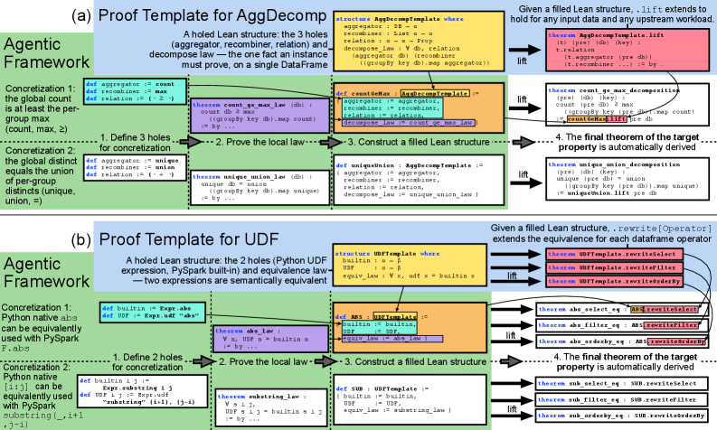
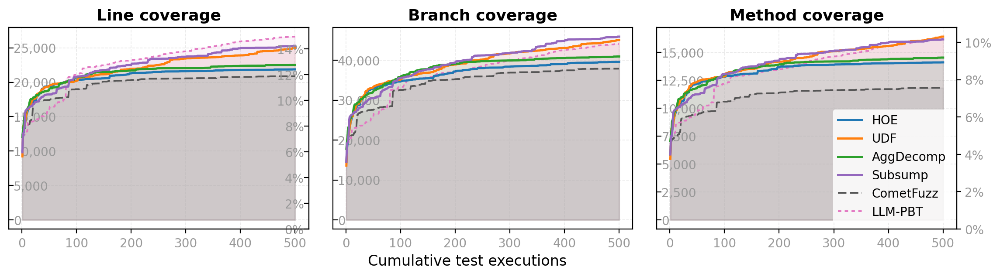

Agentic framework uses parameterized Lean 4 proof templates to machine-check correctness properties of Apache Spark operations.
Abstract
As the cost of code generation becomes cheaper with AI, the new bottleneck in software engineering has shifted to intent specification and validation. Overcoming this durability crisis of AI-driven coding requires more than traditional fuzzing: each candidate property must be proven correct over a model and shown to hold on the real implementation, making formal proof and systematic property-based testing (PBT) complementary. However, validating properties this way at scale requires solving two subproblems: verifying candidate properties and operationalizing PBT without AI hallucination. We hypothesize that recurring property patterns, cast as property templates–abstract, parameterized forms with holes–address both at once. This paper investigates recurring property patterns in Apache Spark. In data-intensive scalable computing systems, correctness properties arise from the principles of data partition, computation decomposition, and dataflow computation. For instance, aggregation decomposition relates a global function executed on the entire dataset to a local function followed by a recombiner. We design an agentic, dual-track validation framework that uses property templates to formally verify correctness in the Lean 4 theorem prover and instantiate PBT templates as executable PySpark tests. Our evaluation shows that property templates increase agentic proof engineering success by up to 2.6x (1.6x on average) and reduce proof hallucinations by 59%. Template-guided PBT synthesis reduces intent misalignments from 22 to 1 and cuts synthesis cost by up to 5.7x (3.8x on average). Template-guided synthesis further exceeds a state-of-the-art Spark fuzzer and approaches unguided LLM-based PBT on code coverage. Finally, comparing the two tracks is informative: when a proof succeeds yet a PBT finds a counterexample, the mismatch identifies a gap between the formal model and implementation.
Problem
Validating the many correctness properties of data-intensive systems like Apache Spark at scale requires both formally proving properties over a model and testing them on the real implementation. AI can propose candidate properties cheaply, but proofs may be hallucinated and generated tests may check weaker intents than desired.
Approach
DualVeri organizes recurring property families (higher-order expression rewrites, UDF rewrites, aggregation decomposition, subsumption) into property templates with typed holes. A proof template is a parameterized Lean 4 theorem reducing each property to a single local law over a model of PySpark's core API, which an agent fills. A paired PBT template instantiates executable PySpark property-based tests. Compiling Lean proofs are manually inspected to detect hallucinated (cheating) proofs.

Figure 3 : Proof templates and their agentic use for the two proof-track families, AggDecomp (a) and UDF (b), and two concretizations per template. The agent fills the holes and proves only the local law (steps 1–3); the template’s pre-proved lift then yields the pipeline-level theorem automatically (step 4).
Results
Templates increased agentic proof synthesis success up to 2.6x (1.6x average) and reduced proof hallucinations by 59%, while lowering LLM cost per property. Template-guided PBT reduced intent misalignments from 22 to 1 and cut synthesis cost up to 5.7x. Comparing tracks revealed cases where a Lean proof succeeds but PBT finds a counterexample, exposing model-implementation gaps.

Figure 7 : Line, branch, and method code coverage of Spark’s catalyst and execution modules as a function of cumulative test executions. Template families and LLM-PBT : 100 PBTs \times 5 executions; CometFuzz : 500 fuzz iterations.
Family
Config
Success
Hallucinated
Cost/prop
HOE (37)
Template
28 (100%)
0
$0.78
HOE (37)
NoTemp
17 (100%)
0
$1.02
UDF (68)
Template
54 (100%)
0
$0.77
UDF (68)
NoTemp
21 (75%)
7
$1.02
Subsump (49)
Template
48 (100%)
0
$0.42
Proof synthesis outcomes per property family (Template vs NoTemp): Compiles, Success, Hallucinated, Cost/prop.